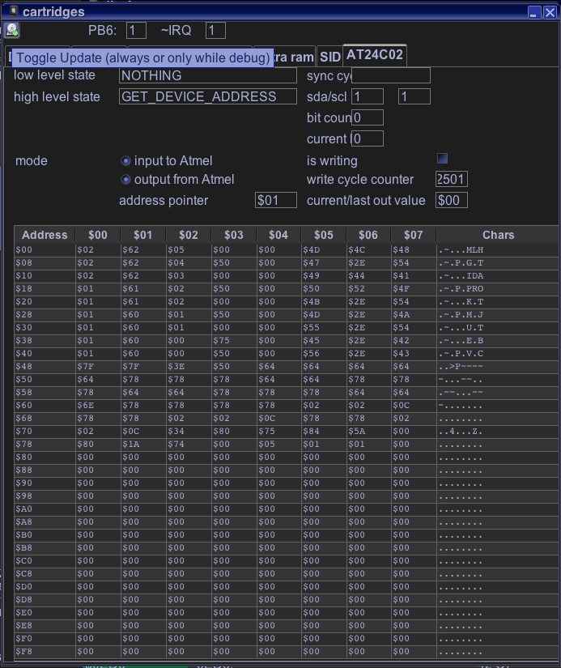

Based on the pdf manuel for the chip family and my own disassembly of VectorPatrol - the only known cartridge, which makes use of the chip.
Emulation is only done in so far, that VectorPatrol playes all right.
Known cartridges which use this hardware:
VectorPatrol
Following is taken from my own blog entry for Vide:
This is the âfullâ naming/specs: ATMEL 611 AT24C02N 10SU-2.7
2,7V
"U" designates Green Package + RoHS compliant.
Package 8S1
8-lead JEDEC SOIC
AT24C02, 2K Two-wire Serial EEPROM:
Internally organized with 32 pages of 8 bytes each, the 2K requires an 8-bit data word address for random word addressing.
Although the datasheet doesn't say it probably due to copyright reasons this is a I2C compliant device.
The "extraordinary" above is the word "two" instead of "one".
Before VPatrol all storage devices inside Vectrex cartridges were one wire devices â a tradition that began with Alex Herberts "Protector".
One wire eEproms (as the name suggests use GND, some Voltage and one Pin for communication) â thus these device often come with 3 connection pins and look a little bit like a classic transistor.
This "one" is/was due to the fact, that the vectrex cartridge port only sports 1 pin that is "programmable" from the Vectrex side. That pin (cartridge port pin 35) is connected directly to VIA and can be read or written to by doing some stuff with (or to) the VIA chip. Namely that is VIA Pin 16 â which, since it is addressed by the 6th bit of Port B, is also often refered to as PB6.
PB6 is famous for communication with all kinds of cartridge internal stuff, like:
bankswitching
eEproms
Thermometers
...
Anyway...
The above mentioned AT24C02N 10SU-2.7 (which I will in the following only reference as "Atmel") is a two wire chip. This means it needs TWO pins to communicate with Vectrex!
SDA: Serial Data
SCL: Serial Clock Input
there are more pins (address pins if you have more than one I2C devices, write protect, etc) â but these do not concern us here
In order to use the chip you must be able to write to the cartridge with one other external (cartridge port - Vectrex) signal.
How is that possible? → IRQ!
The service manual is not very easy to interprete in this regard - cartridge pin 36 is connected to the ~IRQ pin of the processor.
VIA can generate interrupts (by timer, shifts, control lines etc), the schematics show the VIA ~IRQ pin connected to the RAM chip - which is nonsense. What is not nonsense is the fact that ~IRQ signals of VIA must reach the CPU, otherwise it would not be possible to generate interrupts at all (by VIA).
And once the connection to the processor is made it stands to reason that the same TTL - level will be available at the cartridge port (at said pin 36).
Thus by generating an interrupt (~IRQ = 0) or by no interrupt (~IRQ = 1) you can programmatically change the value of pin 36 of the cartridge port!
VIA interrupts can be very flexibly generated, enabled, disabled etc. Also â even if an interrupt is generated, that does not mean the microprocessor has to interrupt its work - you can (conditional code register - bit 4 - Interrupt Request Mask) tell the processor to ignore interrupts. So if you do it right you can set/unset the interrupt to your likings without disturbing your code.
You can view current emulation status by opening a "cartridge" window (in dissi type "carti").

emulation view
The datasheet of the chip can be found in the subdirectory:
documents/hardware/eEprom/20001203U.pdf